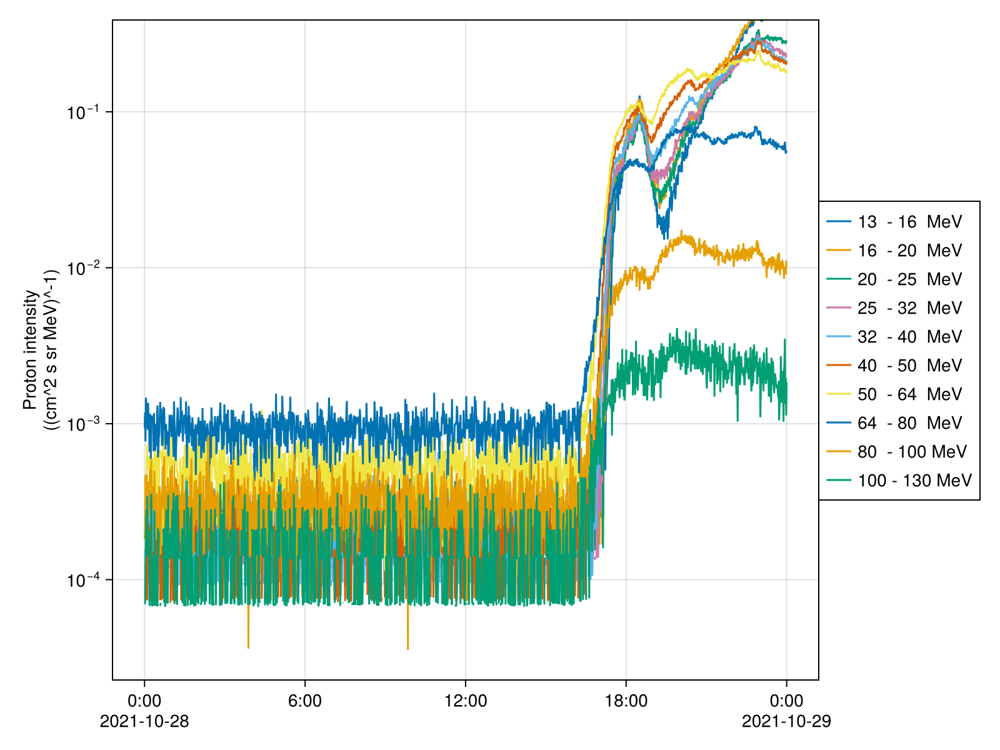
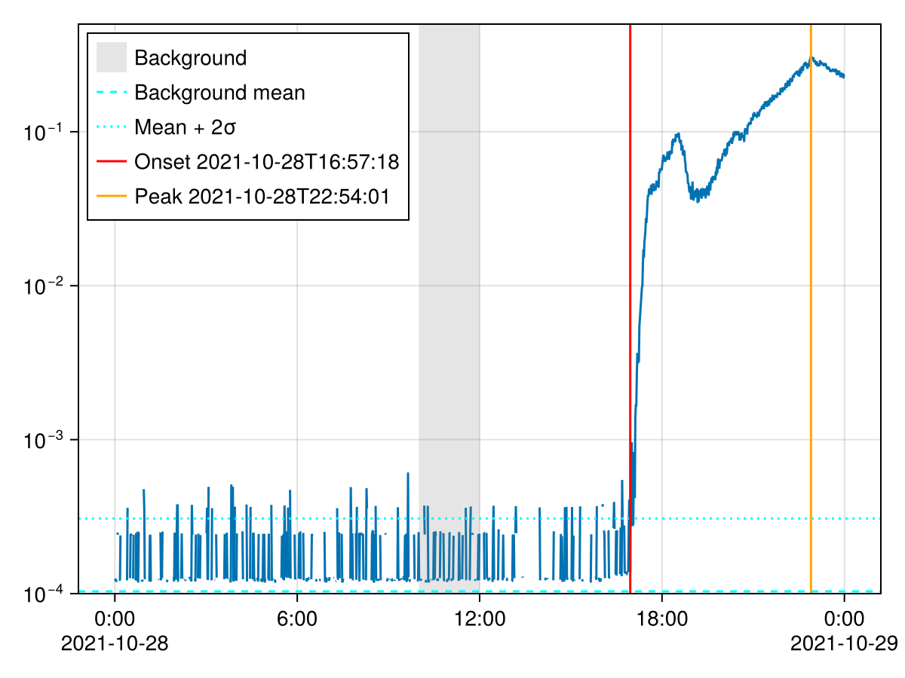

Onset Analysis
using SolarEnergeticParticle
using CDAWeb, Dates, TimeseriesUtilities
using SpaceDataModel: DataVariable
using SpacePhysicsMakie, CairoMakieProton fluxes of SOHO ERNE-HED in the 28 October 2021 event, with a background interval before it:
tmin, tmax = DateTime(2021, 10, 28), DateTime(2021, 10, 29)
bg = (DateTime(2021, 10, 28, 10), DateTime(2021, 10, 28, 12))
PH = cda"SOHO_ERNE-HED_L2-1MIN/PH"(tmin, tmax)
tplot(PH)
Onset and peak
find_onset computes the background mean and standard deviation over bg and searches for the onset after it; TimeseriesUtilities' targmax gives the peak time.
I = DataVariable(PH)[4, :] # channel 4; indexing a file variable gives a plain array
onset = find_onset(I, bg)(time = 2021-10-28T16:57:17.639, N = 30, bg_mean = 0.00010347501f0, bg_std = 0.000102109436f0)peak = targmax(I)2021-10-28T22:54:00.905The n-sigma method:
find_onset(NSigma(), I, bg)(time = 2021-10-28T17:03:17.358, N = 30, bg_mean = 0.00010347501f0, bg_std = 0.000102109436f0)Every channel at once:
[o.time for o in find_onset(PH, bg)]10-element Vector{CommonDataFormat.Epoch}:
2021-10-28T17:09:17.077
2021-10-28T17:09:17.077
2021-10-28T16:58:17.592
2021-10-28T16:57:17.639
2021-10-28T16:51:17.920
2021-10-28T16:50:17.967
2021-10-28T16:35:18.670
2021-10-28T16:30:18.905
2021-10-28T16:41:18.389
2021-10-28T16:37:18.577Visualization
f = Figure()
ax = Axis(f[1, 1]; yscale = log10)
linesplot!(ax, I)
tvspan!(ax, bg...; color = (:gray, 0.2), label = "Background")
hlines!(ax, onset.bg_mean; linestyle = :dash, color = :cyan, label = "Background mean")
hlines!(ax, onset.bg_mean + 2onset.bg_std; linestyle = :dot, color = :cyan, label = "Mean + 2σ")
tlines!(ax, DateTime(onset.time); color = :red, label = "Onset $(round(DateTime(onset.time), Second))")
tlines!(ax, DateTime(peak); color = :orange, label = "Peak $(round(DateTime(peak), Second))")
ylims!(ax, 1e-4, 5e-1)
axislegend(ax; position = :lt)
f
References
- onset_determination.ipynb - serpentine
- Palmroos, C., Gieseler, J., Dresing N., et al. (2022). Solar energetic particle time series analysis with Python. Front. Astronomy Space Sci. 9. doi:10.3389/fspas.2022.1073578